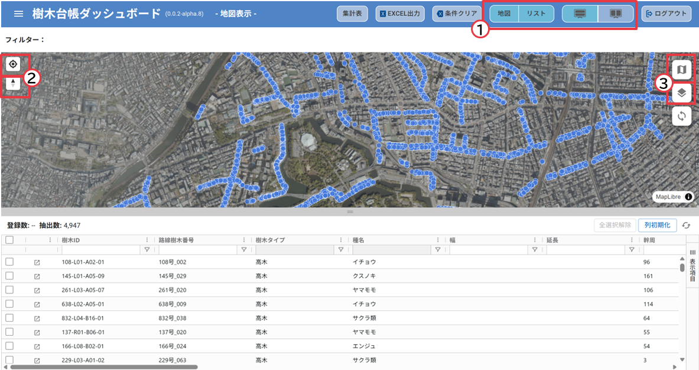
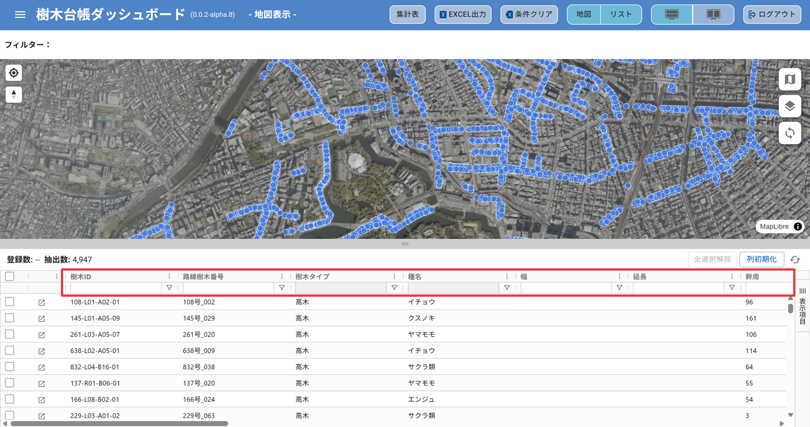
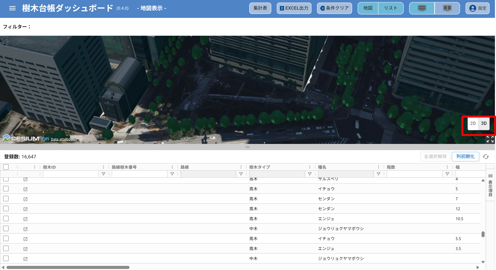
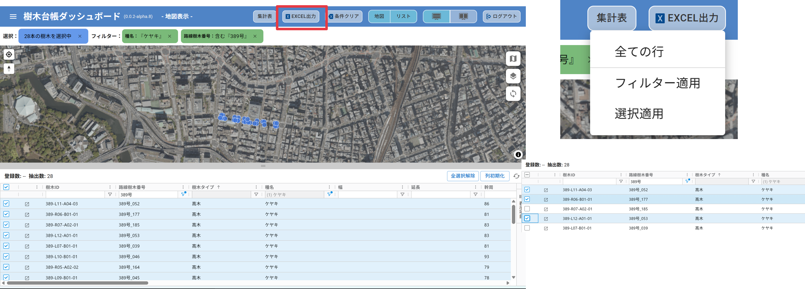
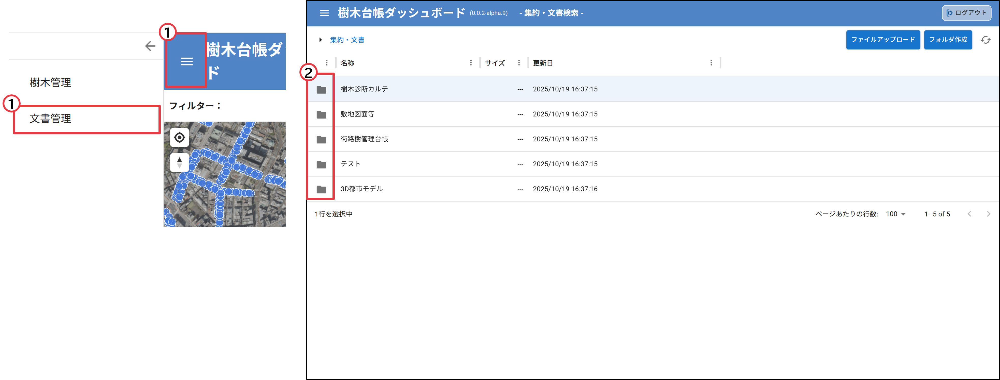

操作マニュアル
1 本書について
本書では、樹木管理ダッシュボード（以下「本システム」という。）の操作手順について記載しています。
2 使い方
2-1 ログイン画面
本システムをデプロイしたURLにアクセスすると以下の画面が表示されます。設定したログインID（メールアドレス）、パスワードを入力することでシステムのメイン（樹木管理）画面が表示されます。

2-2 メイン(樹木管理)画面
① 地図とリストの表示/非表示、上下/左右の設定
② 現在地表示、北を上にする
③ 背景地図切り替え、表示レイヤ切替

④ 検索、ソート、フィルタ
・リストの上部のウインドウで指定した条件により検索、ソートが可能です（複数条件を設定可）

⑤ 属性情報の絞り込み
・路線や幹周などの属性情報を絞り込んで集計します。

⑥ 集計表
・あらかじめ設定した条件に応じて自動集計します。
⑦ 集計表Excel出力
・集計結果を「Eｘcel出力」ボタンでエクスポートします。

⑧ 2D/3D地図表示
・2D/3D地図表示を切り替えます。

⑨ データエクスポート
・全ての行/フィルター適用/選択適用（リスト左端のチェックボックスで選択）をした樹木リストのデータをExcelでダウンロードします

2-3 文書管理画面
① 樹木管理/文書管理 画面切替
・右上のハンバーガーメニューにて、「樹木管理」「文書管理」を切り替えます
② フォルダアクセス
・フォルダアイコンから選択したフォルダにアクセスします

③ ファイルのリスト表示
・アップロードしたファイルのリストを作成し、表示します
④ ソート、検索
・各属性の「…」ボタンからソートや検索が可能です
⑤ ファイルアップロード
・ファイルアップロードボタンから、アップロードが可能です。